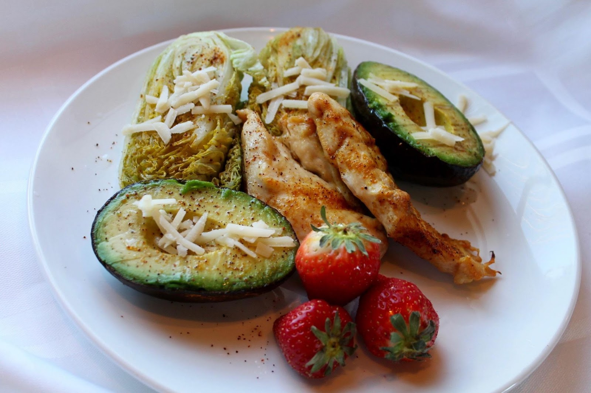

Συνέβη όταν επιστρέψαμε σπίτι μετά το δείπνο σε ένα καφέ. Όλο το βράδυ ο άντρας μου ήταν σιωπηλός, ψυχρά ευγενικός. Κατάλαβα ότι κάτι δεν πήγαινε καλά, αλλά δεν ήξερα τι ακριβώς. Πήγαμε στην κρεβατοκάμαρα, άλλαξα και έβαλε τα ρούχα του σπιτιού, και πάγωσε στο κατώφλι του δωματίου και ξαφνικά είπε:
- Μάρτυράς μου ο Θεός, προσπάθησα να κάνω κάτι. Αλλά δεν μπορώ άλλο.
>Έβγαλε μια βαλίτσα από την ντουλάπα και άρχισε να μαζεύει τα πράγματα χωρίς να πει λέξη. Ήταν σαν ένα κακόγουστο αστείο. Θυμάμαι ότι προσπάθησα να τον σταματήσω, έκανα ηλίθιες ερωτήσεις, προσπαθούσα να τον πείσω. Και αυτός σιωπηλά μέτρησε τις κάλτσες και τα μπλουζάκια που μόλις χθες είχα πλύνει.
Ήδη στεκόταν στο διάδρομο και τραβούσε το παλτό του, λέγοντας:
- Τι μπορώ να κάνω αν είσαι χοντρή!; Πριν από το γάμο, ήσουν αδύνατη, μπορούσα να σε πάρω στην αγκαλιά μου. Δεν αντέχω άλλο.
Και έφυγε. Αργότερα έμαθα ότι είχε που να πάει. Αλλά πια δεν έχει σημασία. Το κυριότερο είναι ότι από εκείνη τη στιγμή άρχισε το αδυνάτισμά μου.
Σωστή διατροφή
Όσο ηλίθιος ήταν ο (ήδη πρώην) σύζυγός μου, είχε δίκιο. Πριν από το γάμο, ζύγιζα 34 κιλά λιγότερο και μετά άρχισε: μαγείρεμα και γεύματα αργά τα βράδια, εγκυμοσύνη, άδεια μητρότητας, καθημερινή στέρηση ύπνου. Φυσικά, φρόντιζα λιγότερο τον εαυτό μου.
Το θίξιμο μου έδινε δύναμη να ενεργήσω. Αποφάσισα ότι θα άλλαζα τις διατροφικές μου συνήθειες, θα ξεκινούσα να τρώω σωστά. Το επόμενο πρωί, έβγαλα από το ψυγείο ό,τι βλαβερό, από αναψυκτικά μέχρι παγωτό και τα πέταξα.
Μου πήρε ακριβώς δυο εβδομάδες. Εκείνη την περίοδο, η κόρη μου πήγε στη γιαγιά της μέχρι το τέλος του καλοκαιριού, οπότε έμεινα μόνη με τον εαυτό μου. Επομένως, το κίνητρό μου εξαρτιόταν αποκλειστικά από εμένα. Ένιωθα απογοήτευση .
br>Πρώτον, μου έλειπαν οι γνώσεις. Ποτέ πριν δεν μετρούσα θερμίδες. Έτσι αποφάσισα να μελετήσω το θέμα από τα πολύ βασικά. Και αποδείχτηκε πιο δύσκολο από ό,τι νόμιζα: κάθε διατροφολόγος έχει δικούς του κανόνες και όρους, τις δικές του ιδέες για τη σωστή διατροφή. Από πλευράς επιστημονικού υλικού, βρήκα μόνο ένα σωρό άρθρα περασμένου αιώνα και ειδικές δίαιτες για διαβητικούς, επιληπτικούς κ.λπ.
Δεύτερον, γρήγορα συνειδητοποίησα ότι η ιδέα του υγιεινού τρόπου ζωής έχει γίνει λατρεία. Οι ειδικοί από το χώρο του μάρκετινγκ και διάφοροι προπονητές μας δίνουν συνέχεια μπάρες με εξωτικά δημητριακά, μας πουλάνε ανάλογα γνωστών προϊόντων δυο φορές πιο ακριβά. Και το αστείο είναι ότι όλα αυτά τα προϊόντα είναι γεμάτα επιβλαβή υποκατάστατα.
Στο τέλος, όταν το κεφάλι μου είχε πήξει από πληροφορίες, αποφάσισα να επιμείνω σε ένα απλό σχήμα:< br>- να κόψω τα γλυκά, τα αμυλούχα και τα τηγανητά;
- επέλεξε τα λαχανικά;
-έτρωγα 4-5 φορές την ημέρα,
- πίνετε περισσότερο νερό.
Και στην αρχή λειτούργησε. Έχασα 3 κιλά σε μια εβδομάδα. Τις πρώτες μέρες, το στομάχι μου γουργούριζε τόσο δυνατά που ένιωθα άβολα όταν βρισκόμουνα ανάμεσα στους συναδέλφους μου. Όταν σταμάτησαν οι ήχοι, το είχα εκλάβει ως καλό σημάδι.
Όμως σύντομα το βάρος αυξήθηκε. Έχω ήδη ακούσει για το λεγόμενο φαινόμενο πλατό, αλλά συνήθως αυτό δεν συμβαίνει αμέσως, αλλά μετά από απώλεια 10-15 κιλών. Πρέπει να ήταν η σωστή διατροφή που μου επέτρεψε να απαλλαγώ από τα περίσσεια υγρά που είχα. Αλλά δε μου ήταν αρκετό
Γυμναστήριο
Έπρεπε να πάρω πρόσθετα μέτρα. Έτσι, σύντομα πήγα στο γυμναστήριο. Τα οικονομικά μου μου επέτρεπαν να πληρώσω για δυο μήνες, αλλά όχι περισσότερο, γιατί έπρεπε να ετοιμάσω την κόρη μου για το σχολείο. Είπα αμέσως στον προπονητή ότι τα πάντα έπρεπε να γίνουν μέσα σε δυο μήνες
Παρ' όλα αυτά, αποφάσισα να δοκιμάσω. Τρεις φορές την εβδομάδα μετά τη δουλειά, ερχόμουν στο γυμναστήριο και αθλούμουν. Στην αρχή, ο προπονητής μου με διόρθωνε δείχνοντας τι και πώς να κάνω σωστά, μετά άρχισε να με αφήνει που και που μόνη μου. Και τότε βρήκα νέα πτυχή στις ασκήσεις.
Στο γυμναστήριο πηγαίνουν άνθρωποι διαφόρων ειδών. Θα τους χώριζα στα εξής γκρουπ:
1) Κορίτσια που που γυμνάζουν τον πισινό τους.
2) Παιδιά που θέλουν να μοιάζουν στον Σβαρτσενέγκερ στα νιάτα του.
3) Λάτρες του υγιεινού τρόπου ζωής, βίγκαν κ.λπ.
Δεν έχω τίποτα εναντίον κανενός από αυτά τα γκρούπ. Αλλά προφανώς δεν ήταν ενθουσιασμένοι μαζί μου. Διαρκώς πάνω μου έπεφταν κοροϊδευτικές και σιχαμένες ματιές, μου μιλούσαν με συγκαταβατικό τόνο, και ήταν αηδιαστικό.
Ακόμα δεν καταλαβαίνω πώς είναι δυνατόν, αφού πήγα γυμναστήριο ακριβώς για να γίνω και εγώ όμορφη και να είμαι υγιής. Για τρεις εβδομάδες πάλευα με την κούραση και την τεμπελιά, έλιωνα, άκουγα τον προπονητή.
Αλλά για να είμαι ειλικρινής, μετά την φυγή του άντρα μου, η αυτοεκτίμησή μου είχε πιάσει πάτο και απλά δεν άντεξα μια τέτοια συμπεριφορά. Τελικά βυθισμένη στις ενοχές και το μίσος για το κορμί μου, αποφάσισα να πάρω δραστικά μέτρα
Κετογονική δίαιτα
Εν ολίγοις, η όλη ιδέα της έγκειται στο να βάλει το σώμα σε κατάσταση κέτωσης, όταν το σώμα δεν έχει αρκετούς υδατάνθρακες και διασπά τα λίπη για ενέργεια, συμπεριλαμβανομένων των αποθεμάτων του. Τα γλυκά και τα αλευρώδη τρόφιμα εξακολουθούν να απαγορεύονται, αλλά τουλάχιστον νιώθεις πείνα.
Άκουσα πολλά διαφορετικά πράγματα για την κετογονική δίαιτα. Υπήρχε πολύ υλικό γι' αυτήν. Ενώ κάποιοι επαινούσαν την αποτελεσματικότητά της, άλλοι την αποκαλούσαν επιβλαβή ή και επικίνδυνη. Ωστόσο, ήμουν έτοιμη να πάρω το ρισκάρω. Για να είμαι ειλικρινής, είχα ήδη αρχίσει να σκέφτομαι τη λιποαναρρόφηση, τι να την κάνω την δίαιτα.
Το στομάχι δεν αποδέχτηκε μια ακόμη αλλαγή στη διατροφή και άρχισε να πονάει. Στην αρχή δεν έδινα μεγάλη σημασία σε αυτό: γενικά, η μετάβαση σε μια κατάσταση κέτωσης συνοδεύεται από μάλλον δυσάρεστα συμπτώματα. Ανάμεσά τους ο πυρετός, η έλλειψη ενέργειας, η δυσοσμία κλπ. Όλα αυτά τα πέρασα. Είχα πυρετό, μετά βίας σηκωνόμουνα από το κρεβάτι το πρωί και ένιωθα ναυτία
Το χειρότερο
Συνέβη την πέμπτη μέρα. Ήμουν στο λεωφορείο, πηγαίνοντας στη δουλειά, ήταν αδύνατον να αναπνεύσει κανείς εκεί και ήθελα πολύ να πάω στην τουαλέτα και ταυτόχρονα να πιώ κάτι.
Μου πήραν αίμα και ούρα για ανάλυση. Στη συνέχεια η νοσοκόμα με βοήθησε να φτάσω στην αίθουσα υπερήχων. Όλα ήταν θολά, απλά ξάπλωσα σε ένα φορείο σε κατάσταση μισολησμονιάς και περίμενα να μου πουν επιτέλους τι συνέβαινε.
Μέχρι το βράδυ, ήρθε πράγματι ο γιατρός, ήταν μια αρκετά γοητευτική, αν και αυστηρή γυναίκα, νομίζω ακόμη και στην ηλικία μου, είπε ότι οι αλλαγές στη διατροφή είχαν προσβάλει τα νεφρά μου (να τι κάνει η κετοδίαιτα). Μιλήσαμε και της είπα πώς προσπάθησα να χάσω κιλά. Η ενδοκρινολόγος με άκουσε προσεκτικά, έδειξε να συμπάσχει πολύ μαζί μου. Δεν ήμουν η πρώτη της ασθενής που έφτασε να είναι σε τέτοια κατάσταση επείδη το ήθελε μόνη της. Δεν με έκαναν να ντραπώ για τις άβολες προσπάθειές μου να αποκαταστήσω την παλιά μου ομορφιά, απλώς πρότειναν μια άλλη μέθοδο: ένα φάρμακο που ονομάζεται .
Μοιράζομαι μαζί σας αυτό που κατάλαβα από αυτά που μου είπε. Πρόκειται για ένα εντελώς φυσικό φάρμακο. Δεδομένου ότι δεν περιέχει χημικές ουσίες, δεν βλάπτει το συκώτι και τα νεφρά. Ολόκληρη η σύνθεσή του είναι φτιαγμένη έτσι ώστε να αναδείξει απλά τις ιδιότητες του βασικού συστατικού του που είναι το μηλόξυδο. Το
έχει πολλαπλή και ταυτόχρονη δράση:
- επιταχύνει το μεταβολισμό των λιπιδίων, έτσι ώστε οι διαδικασίες στο σώμα να προχωρούν πιο γρήγορα.
- σταθεροποιεί την παραγωγή γλυκαγόνης, μιας ορμόνης που είναι υπεύθυνη για τη διάσπαση των λιπών.
- μειώνει την αντίσταση στην ινσουλίνη, έτσι ώστε οι θερμίδες που εισέρχονται στο σώμα να είναι ξοδεύονται αποτελεσματικά για τη θρέψη των κυττάρων και να μη μένουν ως απόθεμα.
- μειώνει την όρεξη, με συνέπεια να τρώτε λιγότερο.
- διατηρεί τον τόνο του σώματος.
Αυτό είναι ένα ολόκληρο σύνολο από βιταμίνες και μικροστοιχεία που σας επιτρέπουν να χάσετε βάρος χωρίς να βλάψετε την υγεία. Επιπλέον, χωρίς επίπονες προπονήσεις και δίαιτες. Φυσικά, μόλις πήρα εξιτήριο, αποφάσισα να το δοκιμάσω
Το λειτουργούσε ήπια. Τα περισσότερα προϊόντα απώλειας βάρους που γνωρίζω έχουν καθαρτική και διουρητική δράση. Ήταν μια ευχάριστη έκπληξη για μένα όταν συνειδητοποίησα ότι ... απλά δεν νιώθω πως χάνω κιλά. Δεν ένιωθα πείνα, καμία ενόχληση, δεν ξέφευγα τρώγοντας φανατικά τα γλυκά. Γιατί με το δεν υπήρχε λόγος να περιορίζω τον εαυτό μου.
Σε αυτό το βολικό τέμπο, χωρίς να το πάρω χαμπάρι, έχασα 7 κιλά σε μια εβδομάδα. Μόλις μια μέρα συνειδητοποίησα ότι δεν μπορούσα να πάω στη δουλειά με τζιν, γιατί μου έπεφτε, αναγκάστηκα να πάω με φόρεμα.
Τα αποτελέσματά μου:
| Πρώτη εβδομάδα | - 7 κιλά |
| Δεύτερη εβδομάδα | - 12 κιλά |
| Τρίτη εβδομάδα | - 17 κιλά |
| Τέταρτη εβδομάδα | - 21 κιλά |
Συνειδητοποίησα επίσης ότι αυτή είναι μια μεγάλη εξοικονόμηση. Στα προϊόντα διαίτης, στο γυμναστήριο, στο κάτω κάτω, σε ρούχα αδυνατίσματος,. Από τότε που άρχισα να τρώω λιγότερο, είχα χρήματα να ξοδέψω. Τα ξόδευα για να ανανεώσω τη γκαρνταρόμπα μου.
Γενικά, η ιστορία μου τελείωσε καλά. Αν στην αρχή ήμουν ράκος, τώρα είμαι απόλυτα ικανοποιημένη με αυτά που κατάφερα: να έχω μεγάλη αυτοεκτίμηση. Επανάκτησα τον χαμένο μου εαυτό μου, πρόκειται για ένα υπέροχο συναίσθημα .Και τώρα θέλω να το ζήσουν και άλλοι.

Μοιράζομαι μαζί σας έναν σύνδεσμο στο επίσημο σάιτ του , όπου μπορείτε να το αγοράσετε απευθείας από τον κατασκευαστή. Είναι λιγότερο πιθανό να πέσετε πάνω σε ένα ψεύτικο, και έχουν και το καλύτερο σέρβις. Επικοινώνησαν μαζί μου την ημέρα της παραγγελίας, τακτοποιήσαμε το θέμα της παράδοσης κατ’ οικον και το έφεραν κυριολεκτικά σε τρεις ημέρες. Γενικά, θα μείνετε ικανοποιημένοι.
Τώρα. μπορείτε να αγοράσετε το με έκπτωση 50%, αλλά βιαστείτε, η προσφορά λήγει στις 26.09. 2022.
Και σας εύχομαι καλή τύχη. Σας εύχομαι να αγαπήσετε τον εαυτό σας. Τα κατάφερα, άρα μπορείτε και εσείς!

Ευχαριστώ πολύ! Το έχω παραγγείλει ήδη, μην χάσετε αυτήν την έκπτωση.
Το άκουσα από την αδερφή μου, είναι επίσης γιατρός. Επιβεβαίωσε ότι το πραγματικά δεν έχει παρενέργειες.
Το παρήγγειλα, περιμένω το πακέτο μου μέσα στην εβδομάδα. Η πληρωμή γίνεται κατά την παραλαβή, και είναι πραγματικά πολύ βολικό.
Το να χάσεις βάρος χωρίς δίαιτα είναι όνειρο. Ίσως το παραγγείλω κι εγώ.
Ναι, το αδυνάτισμα είναι κάτι το οδυνηρό για πολλά κορίτσια. Συμπάσχω με τη συντάκτρια του άρθρου.
Καταλαβαίνω πολύ καλά. Προσπαθούσα πολύ καιρό να αδυνατίσω, μερικές φορές δεν έτρωγα τίποτα για να το πετύχω. Το αποτέλεσα ήταν να πάθω έλκος στομάχου και τα κιλά επέστρεψαν μετά από μερικούς μήνες.
Υπέροχο προϊόν! Το πίνω εδώ και 5 μέρες, ζυγίζομαι κάθε πρωί. Φέρνει αποτέλεσμα!
Έχω ακούσει ότι κάποιοι χάνουν τα μυαλά τους λόγω απώλειας βάρους. Το κυριότερο είναι να μην φέρεις τον εαυτό σου σε τέτοια κατάσταση.
Παράγγειλα πολλά πακέτα ταυτόχρονα για να μην χρειαστεί να αγοράσω περισσότερα αργότερα στην πλήρη τιμή.
Το Keto είναι μια πολύ επικίνδυνη και αφύσικη κατάσταση. Οι άνθρωποι δεν είναι παμφάγοι χωρίς λόγο, δεν πρέπει να κρατάει κανείς αυτή την δίαιτα!